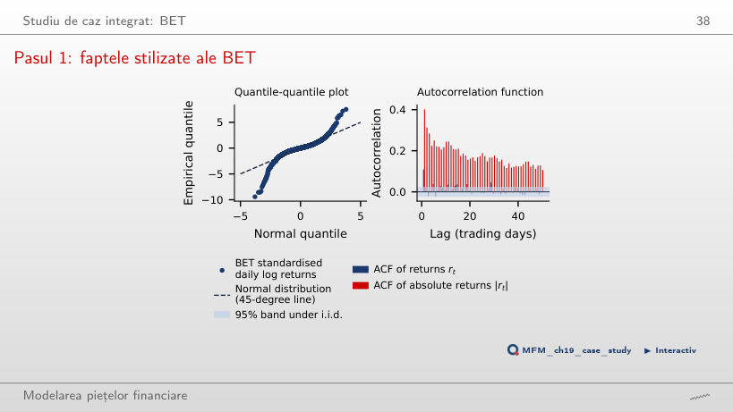
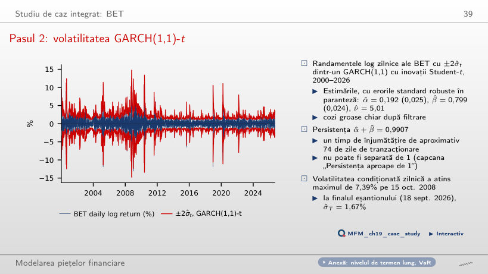
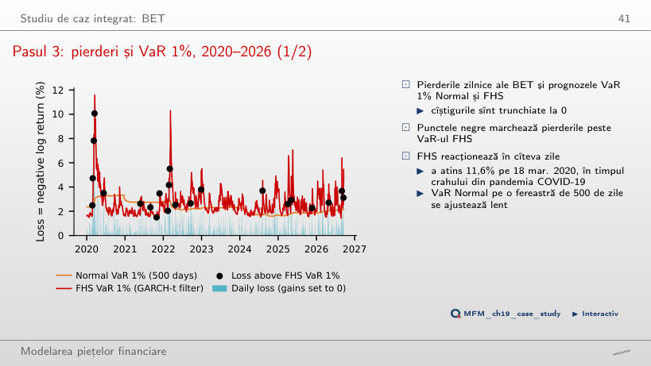
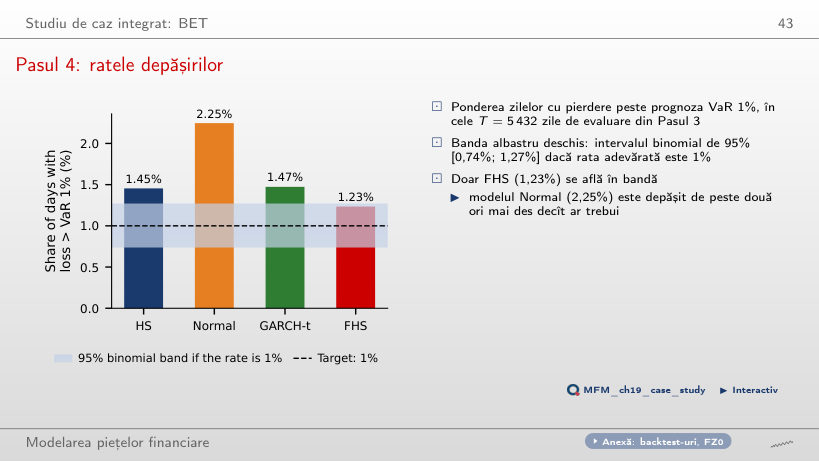
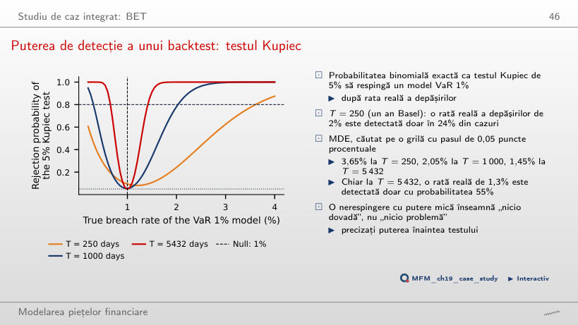
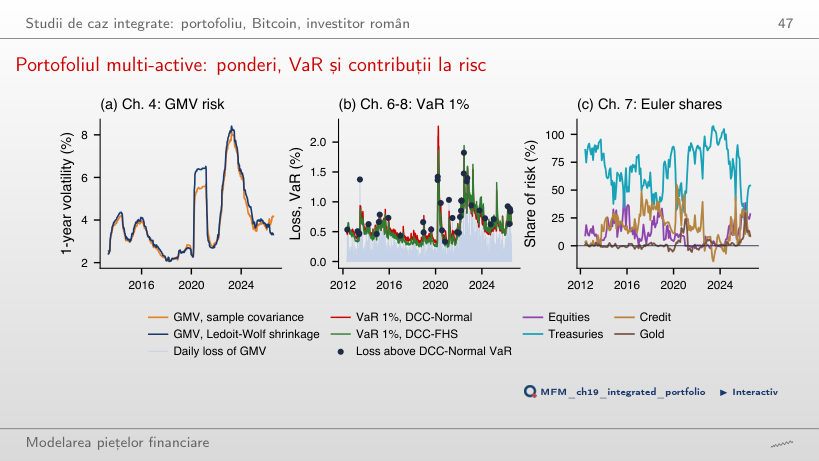
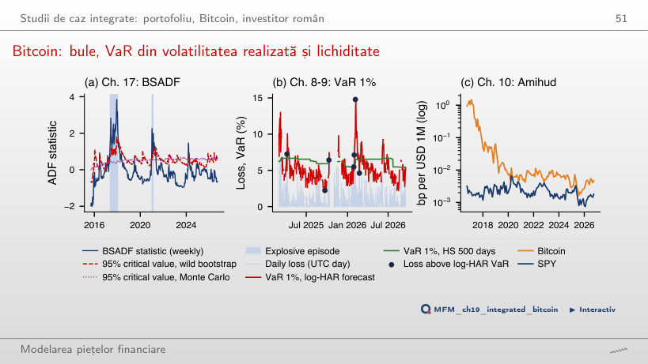
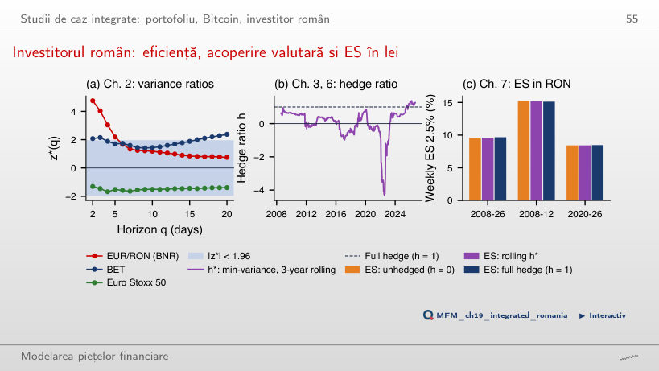
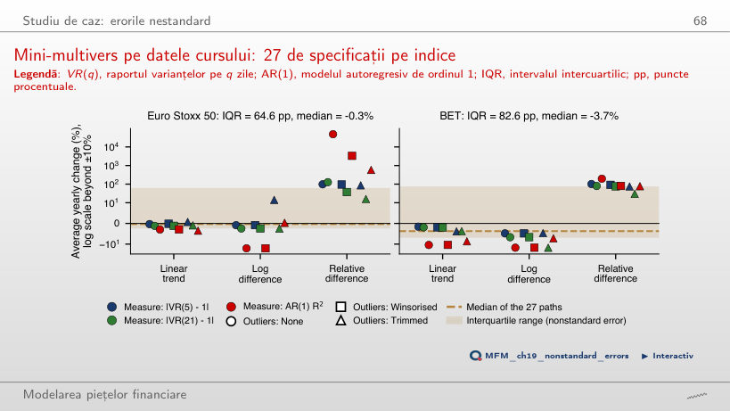

În stînga este slide-ul din curs, în dreapta aceeași figură, calculată în browser din aceleași date. Butonul ▶ modifică parametrul pas cu pas.
Studiu de caz integrat: BET · Studii de caz integrate: portofoliu, Bitcoin, investitor român · Studiu de caz: erorile nestandard
Studiu de caz integrat: BET
Pasul 1: faptele stilizate ale BET

Răspuns
Sub o coadă de tip Pareto, momentele de ordin peste 2,39 sînt infinite. Întregul interval de încredere de 95% [2,12; 3,03] este sub 4: datele sînt compatibile cu un kurtosis infinit, fără să-l demonstreze, iar excesul de kurtosis empiric (11,1) nu estimează un parametru finit, deci se raportează tail index-ul. Pe tot eșantionul sînt 51 de zile dincolo de ±4 abateri standard, față de 0,42 așteptate sub distribuția Normală.
Pasul 2: volatilitatea GARCH(1,1)-t

Răspuns
După aproximativ 74 de zile de tranzacționare, din ln 0,5 / ln 0,9907. Persistența nu poate fi separată de 1: testul raportului de verosimilitate pentru p = 1 dă LR = 1,01, cu p-value 0,16, deci intervalul pentru timpul de înjumătățire începe la 27 de zile și nu are o limită superioară finită.
Pasul 3: pierderi și VaR 1%, 2020–2026

Răspuns
FHS, cu 22 de depășiri; modelul Normal are 41. VaR-ul FHS a urcat la 11,6% pe 18 mar. 2020, în timp ce VaR-ul Normal, estimat pe 500 de zile, se ajustează lent, iar depășirile lui se grupează în primele săptămîni ale fiecărui episod de stres.
Pasul 4: ratele depășirilor

Răspuns
Doar FHS: 1,23%, în intervalul binomial de 95% [0,74%; 1,27%], iar testul Kupiec nu îl respinge (p = 0,095). HS are 1,45%, GARCH-t 1,47%, iar modelul Normal 2,25%, de peste două ori ținta.
Puterea de detecție a unui backtest: testul Kupiec

Răspuns
Doar în 24% din cazuri. Efectul minim detectabil cu o putere de 80% este 3,65% la T = 250, 2,05% la T = 1 000 și 1,45% la T = 5 432. O nerespingere cu putere mică înseamnă „nicio dovadă”, nu „nicio problemă”.
Studii de caz integrate: portofoliu, Bitcoin, investitor român
Portofoliul multi-active: ponderi, VaR și contribuții la risc

Răspuns
Istoria lui aplică ponderile de azi pe datele din care au fost estimate: în fereastra FHS, abaterea standard a randamentelor standardizate ale portofoliului este 0,91, în afara ei 0,95. Cuantila de 99% a pierderii standardizate iese prea mică: VaR-ul mediu este 0,55%, față de 0,58% pentru DCC-Normal, iar depășirile sînt 52, față de 35,8 așteptate (p Kupiec 0,011). DCC-Normal are 40 de depășiri și trece toate cele trei teste. Comparația este retrospectivă: modelul VaR este ales pe aceeași perioadă pe care este evaluat.
Bitcoin: bule, VaR din volatilitatea realizată și lichiditate

Răspuns
Doar cu probabilitatea 47%; efectul minim detectabil cu o putere de 80% este 2,70%. Ambele modele au 7 depășiri față de 4,2 așteptate (p = 0,214), deci diferența practică este capitalul: VaR mediu 5,29% pentru log-HAR, față de 6,24% pentru HS.
Investitorul român: eficiență, acoperire valutară și ES în lei

Răspuns
Leul se depreciază în săptămînile în care acțiunile scad (β = −0,52, t = −2,61), deci cursul compensează o parte din pierdere, iar volatilitatea EUR/RON este 4,6% pe an, față de 20,9% pentru Euro Stoxx 50. ES 2,5% săptămînal, aug. 2008 – sept. 2026: 9,60% fără acoperire, 9,67% cu acoperire integrală; retrospectiv, alegerea lui h a contat puțin pentru risc.
Studiu de caz: erorile nestandard
Mini-multivers pe datele cursului: 27 de specificații pe indice

Răspuns
Modelul. Pentru cele nouă specificații cu tendință liniară, IQR-ul este 2,6 pp pentru Euro Stoxx 50 și 6,7 pp pentru BET, față de 64,6 pp și 82,6 pp pe toate cele 27. Cu diferențe relative, medianele urcă la +98,7% și +80,3% pe an.
Indicele BET: valori oficiale zilnice de închidere, 6 ian. 2000 – 18 sept. 2026, randamente logaritmice în %. Prognozele VaR la o zi: fereastră rolling de 1 000 de zile (500 pentru HS și modelul Normal), GARCH reestimat la fiecare 21 de zile, evaluare din 3 ian. 2005. Mini-multiversul: închideri zilnice Euro Stoxx 50 (EODHD) și BET, 2002–2018. Studiile de caz integrate: opt ETF-uri multi-active (prețuri ajustate, 2007–2026), Bitcoin (închideri zilnice 2014–2026, bare de 5 minute 2024–2026), BET, Euro Stoxx 50 și cursul de referință EUR/RON al BNR (2005–2026).